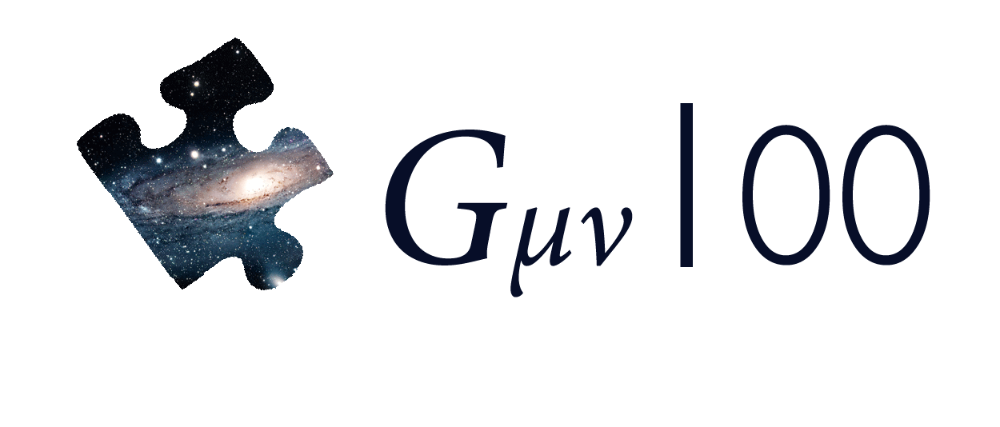

来る２０１５年１１月２５日、
時空を記述するアインシュタインの一般相対性理論は、
誕生１００年を迎えます。
ブラックホールや重力波の存在と膨張する宇宙を予言した一般相対性理論。
様々な実験･観測からそれらの予言は確かめられてきました。
しかし、
未発見の重力波や宇宙の加速膨張を支えるダークエネルギーの正体など
多くの謎がいまだに残されています。
この市民講演会では、市民と学生の皆さんに向けて、
2人の専門家に理論の内容、研究の歴史、その後の展開などを紹介していただきます。
時空の物理学１００年の時の流れを是非楽しんでください。
詳細
日時：2015年11月8日 (日) 13:00-16:00
場所：早稲田大学 西早稲田キャンパス ５７号館 ２０１
対象：高校生以上
定員：300名程度（当日先着順）
入場：無料
企画協力：一般相対論誕生100年記念市民講演会委員会
主催：早稲田大学 理工展連絡会
後援：日本物理学会・日本天文学会
問い合わせ先：********* （***********）
(_at_を@に変えてください)
全国版ホームページ：
| ポスター（早稲田版）ダウンロード：
●Poster
プログラム
13:00-13:05 挨拶 前田恵一 （早稲田大学 物理学科・教授）
13:05-14:05 講演1
講師：二間瀬敏史 （東北大学 教授）
演題：「一般相対性理論と天文学」
講演概要
一般相対性理論ができてから100年の間に、机上の空論と思われていた理論は宇宙を理解するために必要不可欠のものになりました。 これには観測技術の発達が大きな役割を果たしています。 講演では一般相対性理論が予言する中でも特に不思議なブラックホールと重力波を取りあげて、 現在そして将来の観測装置や観測技術がどのようにこれらの存在を確かめ、そしてそれによって宇宙のどんなことが理解できるようになるのかという話をします。
講師プロフィール
1953年、札幌市生まれ、京都大学工学部修士課程卒業後イギリス、カーディフ大学博士課程修了、マックス・プランク天体物理学研究所、ワシントン大学などをへて
1988年、弘前大学理学部助教授。1995年以降、東北大学理学研究科天文学専攻教授。
専門は一般相対性理論、及び宇宙論、最近はすばる望遠鏡を用いた重力レンズ観測から暗黒物質の研究などを行っている。
趣味、以前は陶芸でしたが、時間がなく現在ほぼ無趣味。
14:05-14:30 休憩、質問時間
14:30-15:30 講演2
講師：辻川信二 （東京理科大学 教授）
演題：「ダークエネルギーとダークマター」
講演概要
1980年代後半からの観測技術の向上によって、宇宙が過去にどのように進化して現在に至ったかが明らかになってきました。
宇宙開闢から現在までに、138億年もの時間が経過しており、その間に宇宙は超ミクロのサイズから膨張を続け、現在では光で観測可能な領域は1026mまでに広がっています。そのような宇宙の膨張は、一般相対論によって記述することができ、理論が予言する宇宙の進化は様々な観測と整合的です。
宇宙の観測の精度が向上することで、同時にいくつかの問題も提起されました。
特に、現在の宇宙を占める物質のうち、約70％がダークエネルギーという宇宙の加速膨張を引き起こす成分、約25%がダークマターという重力以外の力がほとんど働かない成分であることが明らかになってきたのです。
この宇宙の2つのダーク成分は光で見ることができず、文字通り暗黒であり、その起源は謎に包まれています。
一般相対論によると、宇宙の膨張の仕方はその中にある物質によって決まるので、今後の宇宙進化を予測するには、ダークエネルギーとダークマターの起源を解明することが鍵となります。
本講演では、理論的に宇宙の暗黒成分の起源を解明しようとする試みについて探っていきます。
講師プロフィール
1996年東京大学理学部数学科卒業、2001年早稲田大学理工学部物理及応用物理学科博士課程修了。
1999年早稲田大学理工学部助手、2004年群馬工業高等専門学校講師を経て、2008年より東京理科大学理学研究科准教授、2015年より同教授。
専門は宇宙物理学、相対論で、ダークエネルギー、ダークマター、インフレーション、量子重力理論、修正重力理論、宇宙背景輻射、宇宙の大規模構造などに興味を持って研究している。
著書は、「Dark energy: Theory and Observations」 (2010年, ケンブリッジ出版，Luca Amendolaとの共著)、「現代宇宙論講義」 (2013年，サイエンス社)、「相対性理論が描く宇宙の未来」 (2015年，シーアンドアール研究所)などがある。